内容要点
[种草R]家人们🙋今天东哥带大家解锁LR的“移除”工具！用它能快速去掉照片里不想要的东西，让画面秒变简洁好看～下面我就详细讲讲使用方法，手把手教你！ [彩虹R]功能总览 [种草R]“移除”工具集合了生成式移除、普通移除、仿制和修复功能。不过国内暂时没法用生成式移除，直接关掉（图2）。 [种草R]普通移除只需在选定区域涂抹，就能自动生成内容填充；仿制工具可以原样复制来源区域像素到目标区域；修复工具会综合周围颜色和色调，让修复效果超自然。 [彩虹R]界面介绍 [种草R]打开LR后，左边有个“橡皮擦”图标，点击就能弹出“移除”“修复”“仿制”3个工具。 [种草R]旁边的横条可以调节画笔大小，拖动“小圆圈”就能轻松调整。再下面还有个“精简”工具，一开始是灰色的，只要操作了任意工具，就能点击它啦（图3）。 [种草R]举个例子，当我用“移除”工具涂抹右上角（图4），右下角的“精简”就可以点击了。点击后会弹出“生成式AI”“刷新”“不透明度”“恢复”，以及画面中被操作过的地方（白框）（见图5）。 [向右R]生成式AI：国内无法使用，直接关掉。 [向右R]刷新：操作后画面没
知识结构
[种草R]家人们🙋今天东哥带大家解锁LR的“移除”工具！用它能快速去掉照片里不想
[种草R]家人们🙋今天东哥带大家解锁LR的“移除”工具！用它能快速去掉照片里不想
[种草R]家人们🙋今天东哥带大家解锁LR的“移除”工具！用它能快速去掉照片里不想
[种草R]家人们🙋今天东哥带大家解锁LR的“移除”工具！用它能快速去掉照片里不想
[种草R]家人们🙋今天东哥带大家解锁LR的“移除”工具！用它能快速去掉照片里不想
- [种草R]家人们🙋今天东哥带大家解锁LR的“移除”工具！用它能快速去掉照片里不想要的东西，让画面秒变简洁好看～下面我就详细讲讲使用方法，手把手教你！ [彩虹R]功能总览 [种草R]“移除”工具集合了生成式移除、普通移除、仿制和修复功能。不过国内暂时没法用生成式移除，直接关掉（图2）。 [种草R]普通移除只需在选定区域涂抹，就能自动生成内容填充；仿制工具可以原样复制来源区域像素到目标区域；修复工具会综合周围颜色和色调，让修复效果超自然。 [彩虹R]界面介绍 [种草R]打开LR后，左边有个“橡皮擦”图标，点击就能弹出“移除”“修复”“仿制”3个工具。 [种草R]旁边的横条可以调节画笔大小，拖动“小圆圈”就能轻松调整。再下面还有个“精简”工具，一开始是灰色的，只要操作了任意工具，就能点击它啦（图3）。 [种草R]举个例子，当我用“移除”工具涂抹右上角（图4），右下角的“精简”就可以点击了。点击后会弹出“生成式AI”“刷新”“不透明度”“恢复”，以及画面中被操作过的地方（白框）（见图5）。 [向右R]生成式AI：国内无法使用，直接关掉。 [向右R]刷新：操作后画面没
[种草R]家人们🙋今天东哥带大家解锁LR的“移除”工具！用它能快速去掉照片里不想要的东西，让画面秒变简洁好看～下面我就详细讲讲使用方法，手把手教你！ [彩虹
1/18–4/18封面/要点：[种草R]家人们🙋今天东哥带大家解锁
[种草R]家人们🙋今天东哥带大家解锁LR的“移除”工具！用它能快速去掉照片里不想要的东西，让画面秒变简洁好看～下面我就详细讲讲使用方法，手把手教你！ [彩虹R]功能总览 [种草R]“移除”工具集合了生成式移除、普通移除、仿制和修复功能。不过国内暂时没法用生成式移除，直接关掉（图2）。 [种草R]普通移除只需在选定区域涂抹，就能自动生成内容填充；仿制工具可以原样复制来源区域像素到目标区域；修复工具会综合周围颜色和色调，让修复效果超自然。 [彩虹R]界面介绍 [种草R]打开LR后，左边有个“橡皮擦”图标，点击就能弹出“移除”“修复”“仿制”3个工具。 [种草R]旁边的横条可以调节画笔大小，拖动“小圆圈”就能轻松调整。再下面还有个“精简”工具，一开始是灰色的，只要操作了任意工具，就能点击它啦（图3）。 [种草R]举个例子，当我用“移除”工具涂抹右上角（图4），右下角的“精简”就可以点击了。点击后会弹出“生成式AI”“刷新”“不透明度”“恢复”，以及画面中被操作过的地方（白框）（见图5）。 [向右R]生成式AI：国内无法使用，直接关掉。 [向右R]刷新：操作后画面没
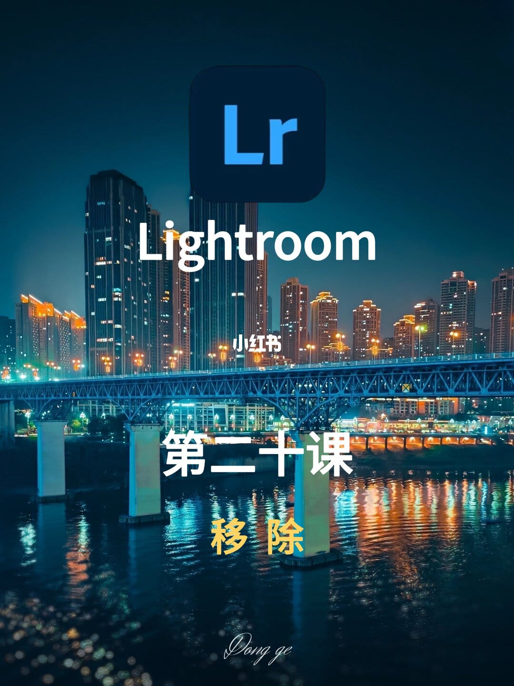
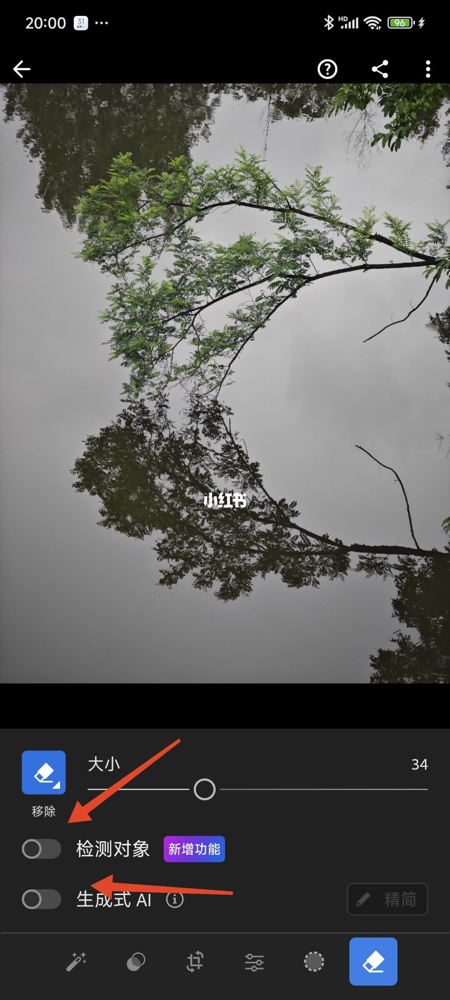
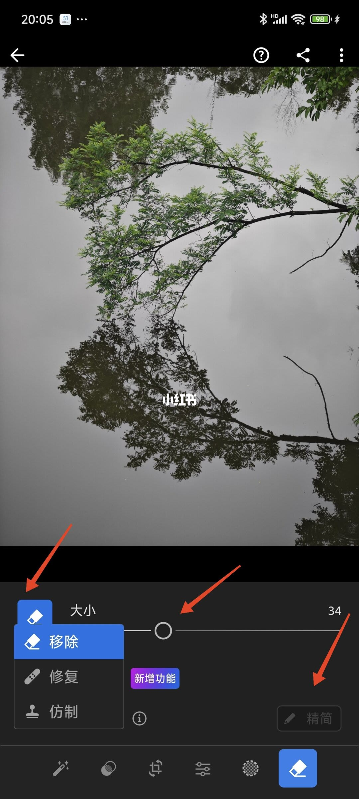
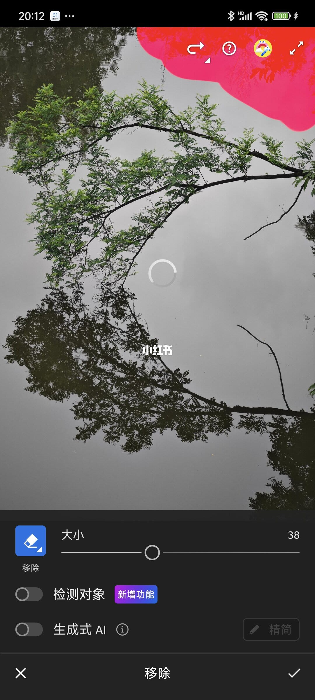
5/18–8/18第5/18页：LR“移除”工具｜一键除杂物，秒变
[种草R]家人们🙋今天东哥带大家解锁LR的“移除”工具！用它能快速去掉照片里不想要的东西，让画面秒变简洁好看～下面我就详细讲讲使用方法，手把手教你！ [彩虹R]功能总览 [种草R]“移除”工具集合了生成式移除、普通移除、仿制和修复功能。不过国内暂时没法用生成式移除，直接关掉（图2）。 [种草R]普通移除只需在选定区域涂抹，就能自动生成内容填充；仿制工具可以原样复制来源区域像素到目标区域；修复工具会综合周围颜色和色调，让修复效果超自然。 [彩虹R]界面介绍 [种草R]打开LR后，左边有个“橡皮擦”图标，点击就能弹出“移除”“修复”“仿制”3个工具。 [种草R]旁边的横条可以调节画笔大小，拖动“小圆圈”就能轻松调整。再下面还有个“精简”工具，一开始是灰色的，只要操作了任意工具，就能点击它啦（图3）。 [种草R]举个例子，当我用“移除”工具涂抹右上角（图4），右下角的“精简”就可以点击了。点击后会弹出“生成式AI”“刷新”“不透明度”“恢复”，以及画面中被操作过的地方（白框）（见图5）。 [向右R]生成式AI：国内无法使用，直接关掉。 [向右R]刷新：操作后画面没
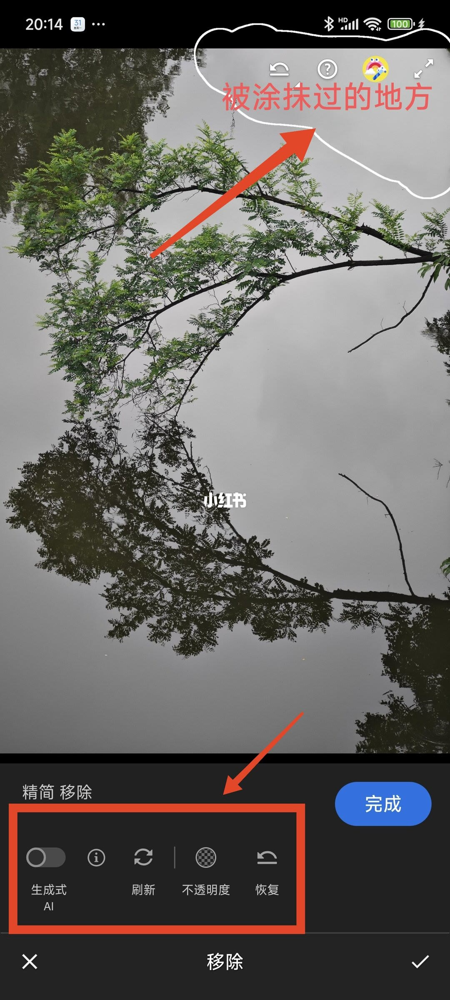
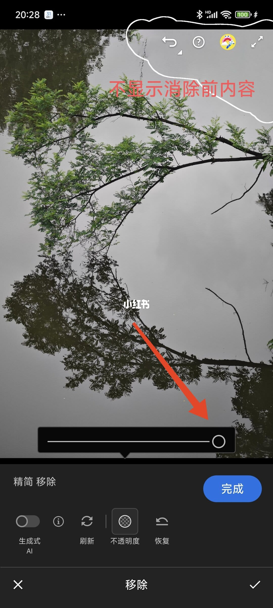
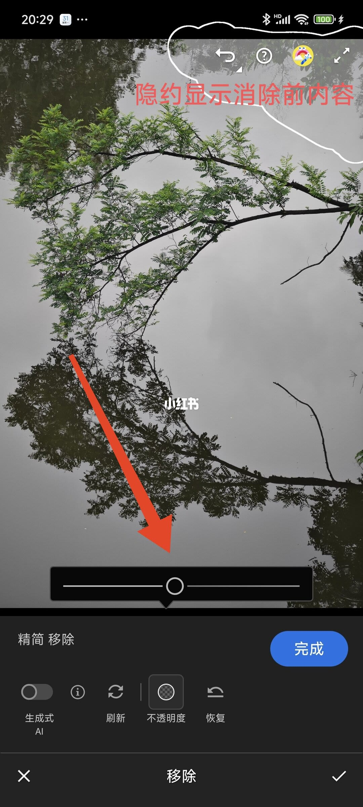
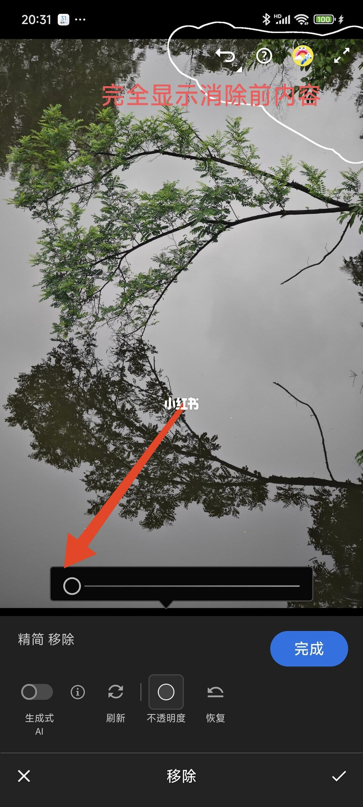
9/18–12/18第9/18页：LR“移除”工具｜一键除杂物，秒变
[种草R]家人们🙋今天东哥带大家解锁LR的“移除”工具！用它能快速去掉照片里不想要的东西，让画面秒变简洁好看～下面我就详细讲讲使用方法，手把手教你！ [彩虹R]功能总览 [种草R]“移除”工具集合了生成式移除、普通移除、仿制和修复功能。不过国内暂时没法用生成式移除，直接关掉（图2）。 [种草R]普通移除只需在选定区域涂抹，就能自动生成内容填充；仿制工具可以原样复制来源区域像素到目标区域；修复工具会综合周围颜色和色调，让修复效果超自然。 [彩虹R]界面介绍 [种草R]打开LR后，左边有个“橡皮擦”图标，点击就能弹出“移除”“修复”“仿制”3个工具。 [种草R]旁边的横条可以调节画笔大小，拖动“小圆圈”就能轻松调整。再下面还有个“精简”工具，一开始是灰色的，只要操作了任意工具，就能点击它啦（图3）。 [种草R]举个例子，当我用“移除”工具涂抹右上角（图4），右下角的“精简”就可以点击了。点击后会弹出“生成式AI”“刷新”“不透明度”“恢复”，以及画面中被操作过的地方（白框）（见图5）。 [向右R]生成式AI：国内无法使用，直接关掉。 [向右R]刷新：操作后画面没
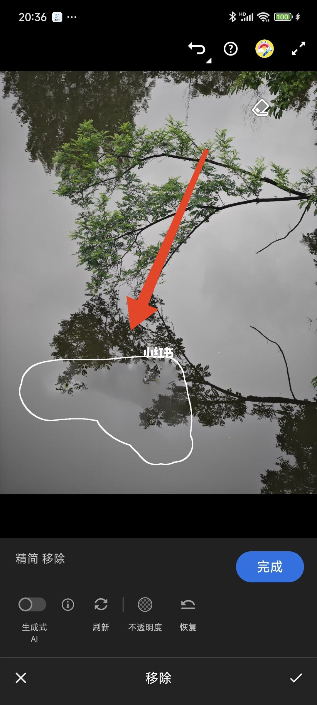
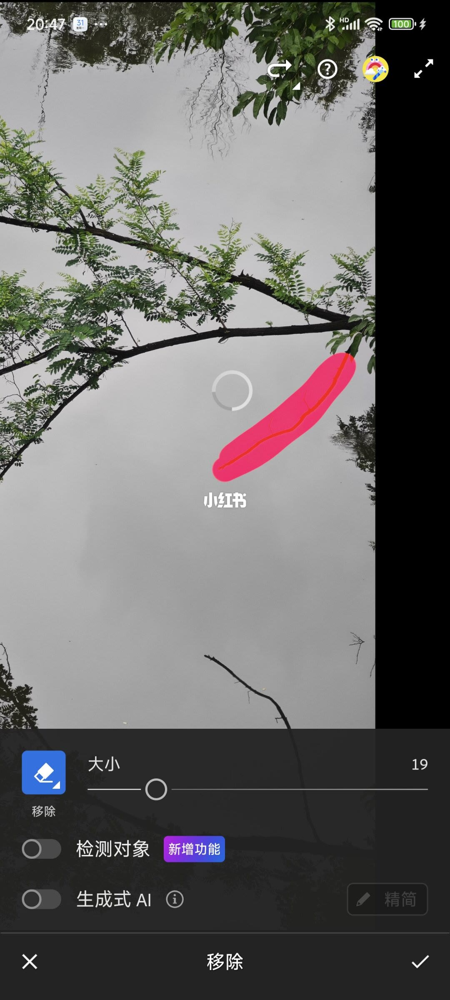
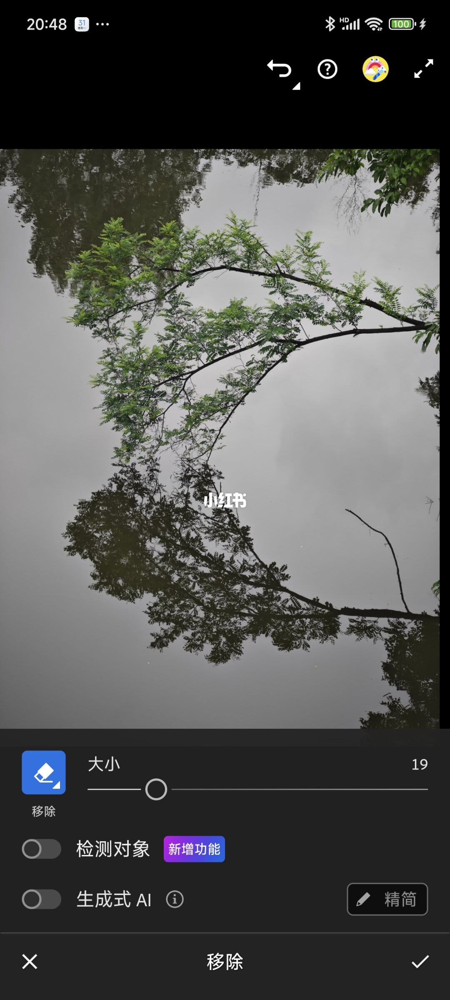
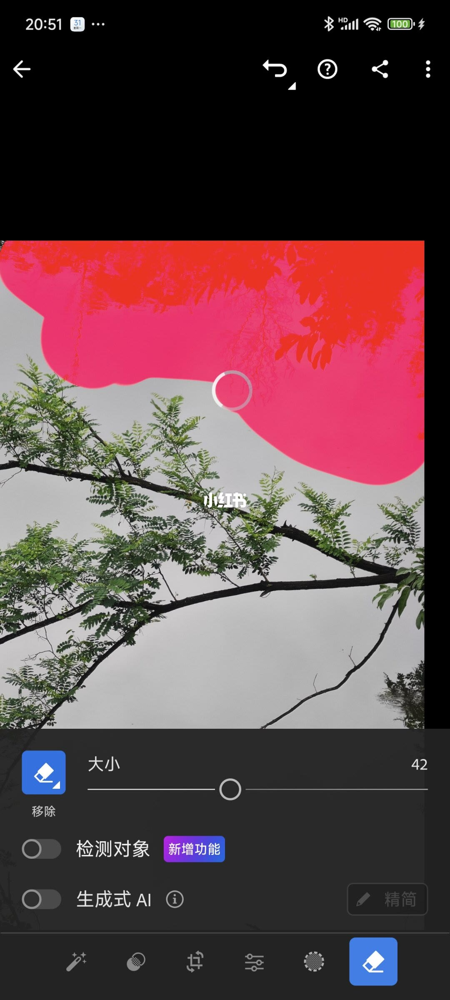
13/18–16/18第13/18页：LR“移除”工具｜一键除杂物，秒
[种草R]家人们🙋今天东哥带大家解锁LR的“移除”工具！用它能快速去掉照片里不想要的东西，让画面秒变简洁好看～下面我就详细讲讲使用方法，手把手教你！ [彩虹R]功能总览 [种草R]“移除”工具集合了生成式移除、普通移除、仿制和修复功能。不过国内暂时没法用生成式移除，直接关掉（图2）。 [种草R]普通移除只需在选定区域涂抹，就能自动生成内容填充；仿制工具可以原样复制来源区域像素到目标区域；修复工具会综合周围颜色和色调，让修复效果超自然。 [彩虹R]界面介绍 [种草R]打开LR后，左边有个“橡皮擦”图标，点击就能弹出“移除”“修复”“仿制”3个工具。 [种草R]旁边的横条可以调节画笔大小，拖动“小圆圈”就能轻松调整。再下面还有个“精简”工具，一开始是灰色的，只要操作了任意工具，就能点击它啦（图3）。 [种草R]举个例子，当我用“移除”工具涂抹右上角（图4），右下角的“精简”就可以点击了。点击后会弹出“生成式AI”“刷新”“不透明度”“恢复”，以及画面中被操作过的地方（白框）（见图5）。 [向右R]生成式AI：国内无法使用，直接关掉。 [向右R]刷新：操作后画面没
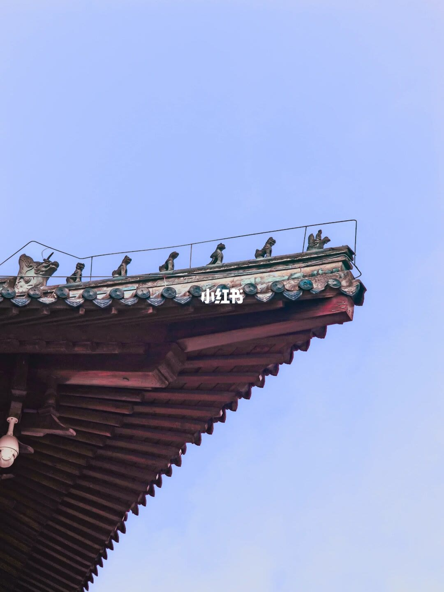
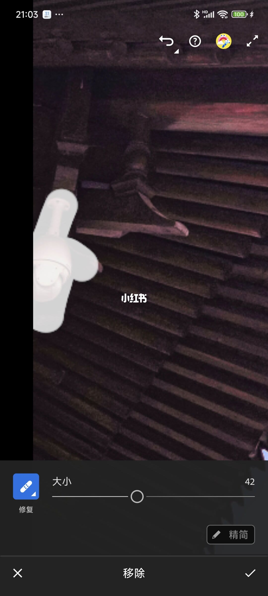
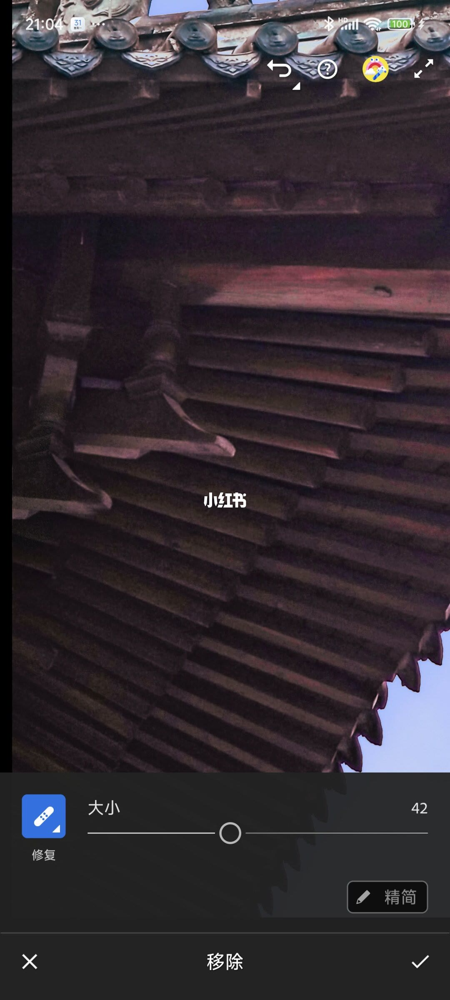
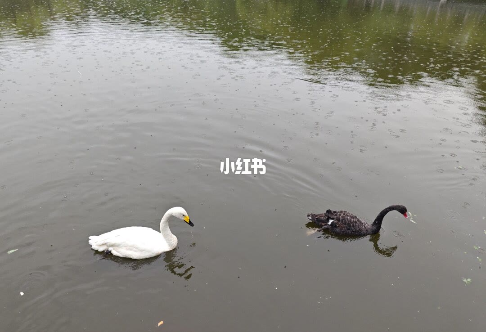
17/18–18/18第17/18页：LR“移除”工具｜一键除杂物，秒
[种草R]家人们🙋今天东哥带大家解锁LR的“移除”工具！用它能快速去掉照片里不想要的东西，让画面秒变简洁好看～下面我就详细讲讲使用方法，手把手教你！ [彩虹R]功能总览 [种草R]“移除”工具集合了生成式移除、普通移除、仿制和修复功能。不过国内暂时没法用生成式移除，直接关掉（图2）。 [种草R]普通移除只需在选定区域涂抹，就能自动生成内容填充；仿制工具可以原样复制来源区域像素到目标区域；修复工具会综合周围颜色和色调，让修复效果超自然。 [彩虹R]界面介绍 [种草R]打开LR后，左边有个“橡皮擦”图标，点击就能弹出“移除”“修复”“仿制”3个工具。 [种草R]旁边的横条可以调节画笔大小，拖动“小圆圈”就能轻松调整。再下面还有个“精简”工具，一开始是灰色的，只要操作了任意工具，就能点击它啦（图3）。 [种草R]举个例子，当我用“移除”工具涂抹右上角（图4），右下角的“精简”就可以点击了。点击后会弹出“生成式AI”“刷新”“不透明度”“恢复”，以及画面中被操作过的地方（白框）（见图5）。 [向右R]生成式AI：国内无法使用，直接关掉。 [向右R]刷新：操作后画面没
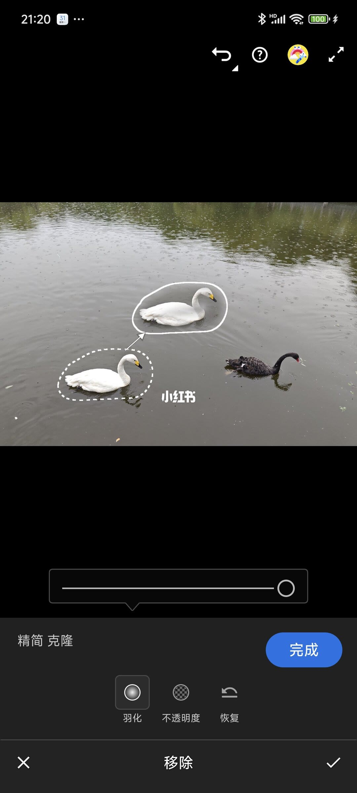
口述/画面要点（18段）
结合 Whisper medium 与画面大字整理；专有名词已校对。
封面/要点：[种草R]家人们🙋今天东哥带大家解锁LR的“移除”工具！用它能快速去掉照片里不想
第2/18页：LR“移除”工具｜一键除杂物，秒变干净大片
第3/18页：LR“移除”工具｜一键除杂物，秒变干净大片
第4/18页：LR“移除”工具｜一键除杂物，秒变干净大片
第5/18页：LR“移除”工具｜一键除杂物，秒变干净大片
第6/18页：LR“移除”工具｜一键除杂物，秒变干净大片
第7/18页：LR“移除”工具｜一键除杂物，秒变干净大片
第8/18页：LR“移除”工具｜一键除杂物，秒变干净大片
第9/18页：LR“移除”工具｜一键除杂物，秒变干净大片
第10/18页：LR“移除”工具｜一键除杂物，秒变干净大片
第11/18页：LR“移除”工具｜一键除杂物，秒变干净大片
第12/18页：LR“移除”工具｜一键除杂物，秒变干净大片
第13/18页：LR“移除”工具｜一键除杂物，秒变干净大片
第14/18页：LR“移除”工具｜一键除杂物，秒变干净大片
第15/18页：LR“移除”工具｜一键除杂物，秒变干净大片
第16/18页：LR“移除”工具｜一键除杂物，秒变干净大片
第17/18页：LR“移除”工具｜一键除杂物，秒变干净大片
第18/18页：LR“移除”工具｜一键除杂物，秒变干净大片